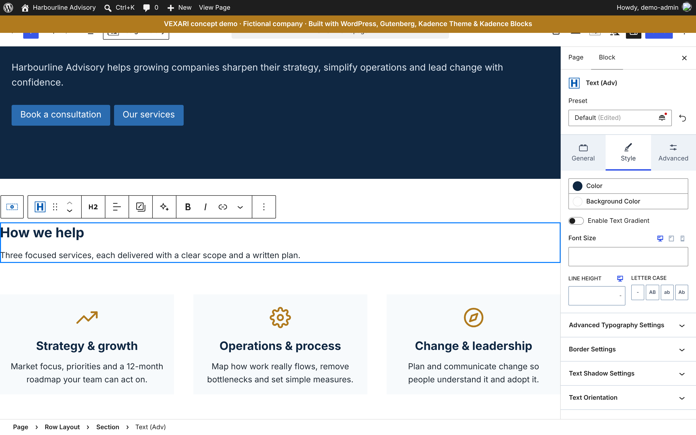

WordPress + Kadence concept demo
A one-page website for a fictional management consulting firm, built by VEXARI Agency to show how we work with WordPress, the Gutenberg block editor, Kadence Theme and Kadence Blocks. Built and tested locally; it is not a live site.
- PlatformWordPress 7.1.5, Gutenberg
- Theme & blocksKadence Theme 1.6.0 · Kadence Blocks 3.9.1.1 (free versions)
- Checks0 axe WCAG 2.2 AA issues · no horizontal scroll on mobile
- Editable48 Kadence/Gutenberg blocks, all valid in the editor
Desktop and mobile



Kadence features used
- Row Layout and Section blocks: 1, 2 and 3 columns, full-width backgrounds, responsive padding
- Advanced Text headings with responsive size presets, colours and anchor links for the menu
- Advanced Buttons, Info Boxes with icons, Icon List, and an Accordion for the FAQ
- Kadence Theme page settings (hidden title, full width, unboxed) and the header with a mobile menu drawer
Honest scope
This is a test site made by VEXARI Agency for a fictional company. It is not a project delivered to a paying client, and no Kadence Pro features were used. The files needed to rebuild it are in the repository folder.